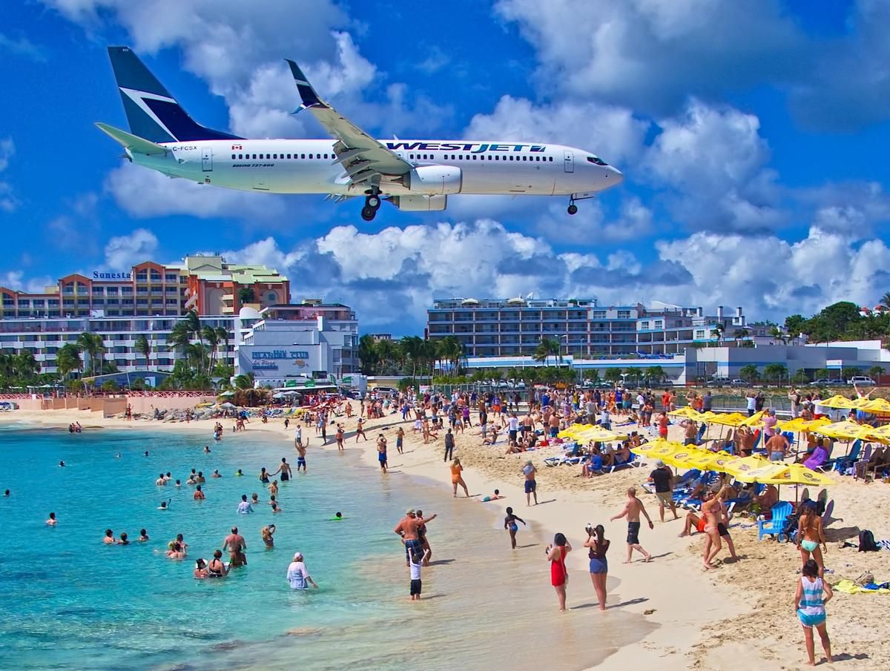
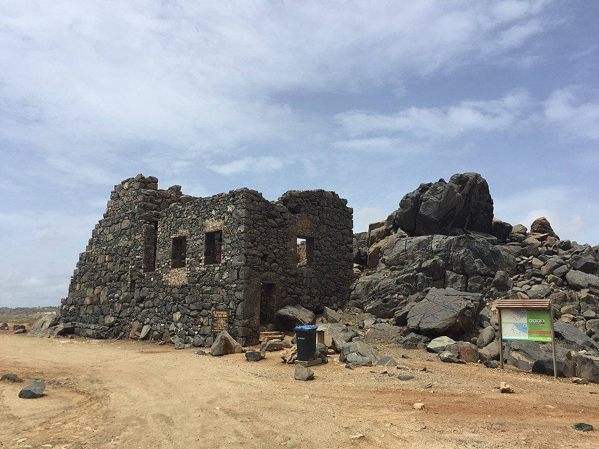
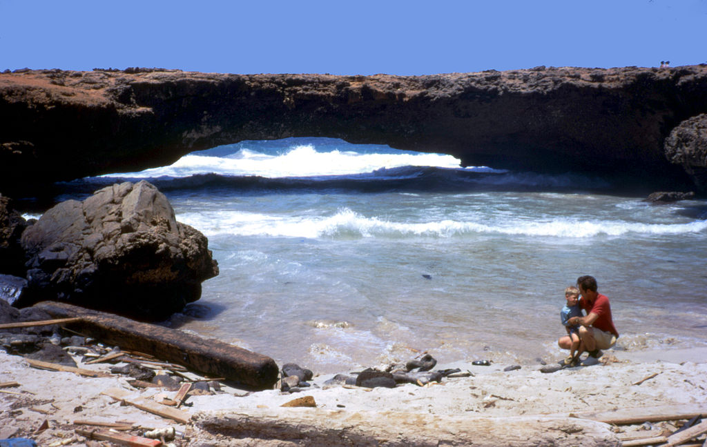

Sint Maarten is a country of the Netherlands on the island of Saint Martin. It shares the island with the French Saint Martin the islands namesake. The island is rather small and you can loop around the entirty in about a day. Sint Maarten has a famous beach right at the airport. Tourist flock to the beach to cath a view of the planes landing and taking off. There is also a charter boat service that takes you out to sea with a dophins view of the airportb and beach.

Aruba
Aruba is another island country under the Netherlands. It is a part of the ABC Dutch islands along with Curacao and Bonaire. Aruba is the closest to the Venezuela mainland. There are white sand beaches that dot the island but some of the areas look like desert landscape. Historic atractions are a huge draw of tourism notably the natural bridge made of limestone and the Bushiribana Ruins on the islands east side. Another tourist atraction is the California Lighthouse on the northern tip where you can look out over the island and enjoy authentic smoothies from the vendors that set up shop.


Curacao
Curacao is a part of the ABC islands of the Dutch Caribbean. It has a laid back atmosphere with beaches and national parks to explore. One of the main atractions is scuba diving since the island has a sharp drop point about 60 feet out known as the "blue edge". Curacao is diverse poplulation wise as most people there speak at least 2 to 3 languages. Willemstad the population center is known for great shopping and the Queen Emma Pontoon Bridge which swings out when boats are leaving or coming which pedestrians can stay on when in motion.